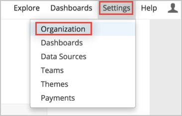
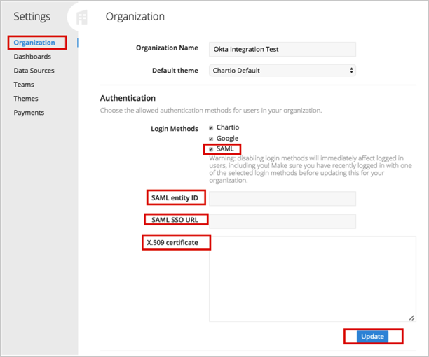

Sign in to Chartio as an Organization owner.
Select Organization from the upper right Settings drop down menu:

On the Organization settings page, scroll down to the Authentication section and enter the following: (see screen shot at end of step for reference):
For Login Methods, make sure SAML is checked.
SAML Entity ID: Copy and paste the following:
Sign into the Okta Admin Dashboard to generate this variable.
SAML SSO URL: Copy and paste the following:
Sign into the Okta Admin Dashboard to generate this variable.
X.509 Certificate: Copy and paste the following:
Sign into the Okta Admin Dashboard to generate this variable.
Click Update.

Done!
Notes:
SP-initiated flows, IdP-initiated flows, and Just In Time (JIT) provisioning are all supported.